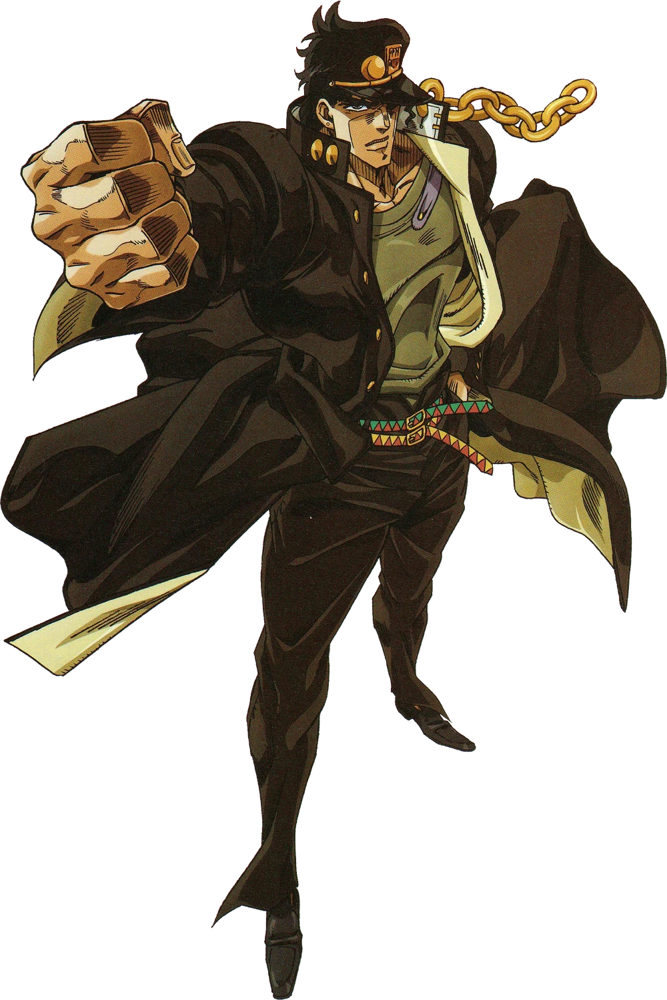

PART 3 · STARDUST CRUSADERS
#01
STAND USER
JOTARO KUJO Джотаро Куджо
STAR PLATINUM
Молчаливый и суровый старшеклассник, внук Джозефа Джостара. Обладает невероятной выдержкой, железной волей и выдающимся тактическим умом в бою.
Его Стенд Star Platinum обладает колоссальной разрушительной силой, сверхсветовой скоростью и невероятной точностью. В критические моменты способен останавливать время.
Сила A
Скорость A
Радиус C
Прочность A
Точность A
Потенциал A